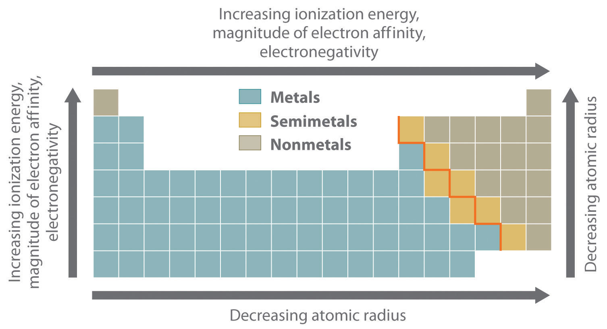
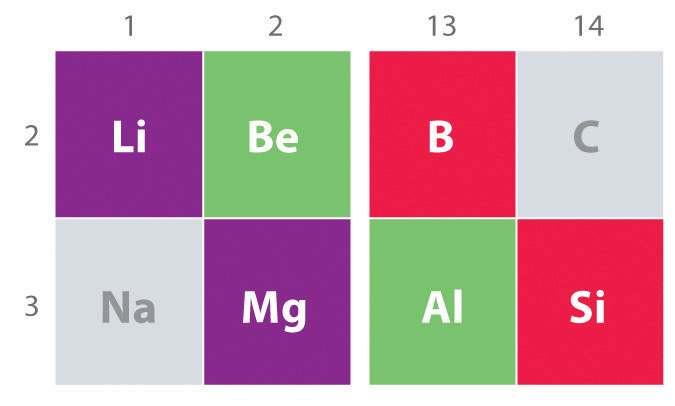

As we begin our summary of periodic trends, recall from Chapter 7 "The Periodic Table and Periodic Trends" that the single most important unifying principle in understanding the chemistry of the elements is the systematic increase in atomic number, accompanied by the orderly filling of atomic orbitals by electrons, which leads to periodicity in such properties as atomic and ionic size, ionization energy, electronegativity, and electron affinity. The same factors also lead to periodicity in valence electron configurations, which for each group results in similarities in oxidation states and the formation of compounds with common stoichiometries.
The most important periodic trends in atomic properties are summarized in Figure 21.1 "Summary of Periodic Trends in Atomic Properties". Recall from Chapter 7 "The Periodic Table and Periodic Trends" that these trends are based on periodic variations in a single fundamental property, the effective nuclear chargeThe nuclear charge an electron actually experiences because of shielding from other electrons closer to the nucleus. (Zeff), which increases from left to right and from top to bottom in the periodic table (Figure 6.29 "Orbital Energy Level Diagram for a Typical Multielectron Atom").
The diagonal line in Figure 21.1 "Summary of Periodic Trends in Atomic Properties" separates the metals (to the left of the line) from the nonmetals (to the right of the line). Because metals have relatively low electronegativities, they tend to lose electrons in chemical reactions to elements that have relatively high electronegativities, forming compounds in which they have positive oxidation states. Conversely, nonmetals have high electronegativities, and they therefore tend to gain electrons in chemical reactions to form compounds in which they have negative oxidation states. The semimetals lie along the diagonal line dividing metals and nonmetals. It is not surprising that they tend to exhibit properties and reactivities intermediate between those of metals and nonmetals. Because the elements of groups 13, 14, and 15 span the diagonal line separating metals and nonmetals, their chemistry is more complex than predicted based solely on their valence electron configurations.
Figure 21.1 Summary of Periodic Trends in Atomic Properties
Ionization energies, the magnitude of electron affinities, and electronegativities generally increase from left to right and from bottom to top. In contrast, atomic size decreases from left to right and from bottom to top. Consequently, the elements in the upper right of the periodic table are the smallest and most electronegative; the elements in the bottom left are the largest and least electronegative. The semimetals lie along the diagonal line separating the metals from the nonmetals and exhibit intermediate properties.
The chemistry of the second-period element of each group (n = 2: Li, Be, B, C, N, O, and F) differs in many important respects from that of the heavier members, or congeners, of the group. Consequently, the elements of the third period (n = 3: Na, Mg, Al, Si, P, S, and Cl) are generally more representative of the group to which they belong. The anomalous chemistry of second-period elements results from three important characteristics: small radii, energetically unavailable d orbitals, and a tendency to form pi (π) bonds with other atoms.
In contrast to the chemistry of the second-period elements, the chemistry of the third-period elements is more representative of the chemistry of the respective group.
Due to their small radii, second-period elements have electron affinities that are less negative than would be predicted from general periodic trends. When an electron is added to such a small atom, increased electron–electron repulsions tend to destabilize the anion. Moreover, the small sizes of these elements prevent them from forming compounds in which they have more than four nearest neighbors. Thus BF3 forms only the four-coordinate, tetrahedral BF4− ion, whereas under the same conditions AlF3 forms the six-coordinate, octahedral AlF63− ion. Because of the smaller atomic size, simple binary ionic compounds of second-period elements also have more covalent character than the corresponding compounds formed from their heavier congeners. The very small cations derived from second-period elements have a high charge-to-radius ratio and can therefore polarize the filled valence shell of an anion. As such, the bonding in such compounds has a significant covalent component, giving the compounds properties that can differ significantly from those expected for simple ionic compounds. As an example, LiCl, which is partially covalent in character, is much more soluble than NaCl in solvents with a relatively low dielectric constant, such as ethanol (ε = 25.3 versus 80.1 for H2O).
Because d orbitals are never occupied for principal quantum numbers less than 3, the valence electrons of second-period elements occupy 2s and 2p orbitals only. The energy of the 3d orbitals far exceeds the energy of the 2s and 2p orbitals, so using them in bonding is energetically prohibitive. Consequently, electron configurations with more than four electron pairs around a central, second-period element are simply not observed.You may recall from Chapter 8 "Ionic versus Covalent Bonding" that the role of d orbitals in bonding in main group compounds with coordination numbers of 5 or higher remains somewhat controversial. In fact, theoretical descriptions of the bonding in molecules such as SF6 have been published without mentioning the participation of d orbitals on sulfur. Arguments based on d-orbital availability and on the small size of the central atom, however, predict that coordination numbers greater than 4 are unusual for the elements of the second period, which is in agreement with experimental results.
One of the most dramatic differences between the lightest main group elements and their heavier congeners is the tendency of the second-period elements to form species that contain multiple bonds. For example, N is just above P in group 15: N2 contains an N≡N bond, but each phosphorus atom in tetrahedral P4 forms three P–P bonds. This difference in behavior reflects the fact that within the same group of the periodic table, the relative energies of the π bond and the sigma (σ) bond differ. A C=C bond, for example, is approximately 80% stronger than a C–C bond. In contrast, an Si=Si bond, with less p-orbital overlap between the valence orbitals of the bonded atoms because of the larger atomic size, is only about 40% stronger than an Si–Si bond. Consequently, compounds that contain both multiple and single C to C bonds are common for carbon, but compounds that contain only sigma Si–Si bonds are more energetically favorable for silicon and the other third-period elements.
Another important trend to note in main group chemistry is the chemical similarity between the lightest element of one group and the element immediately below and to the right of it in the next group, a phenomenon known as the diagonal effect (Figure 21.2 "The Diagonal Effect") There are, for example, significant similarities between the chemistry of Li and Mg, Be and Al, and B and Si. Both BeCl2 and AlCl3 have substantial covalent character, so they are somewhat soluble in nonpolar organic solvents. In contrast, although Mg and Be are in the same group, MgCl2 behaves like a typical ionic halide due to the lower electronegativity and larger size of magnesium.
Figure 21.2 The Diagonal Effect
The properties of the lightest element in a group are often more similar to those of the element below and to the right in the periodic table. For instance, the chemistry of lithium is more similar to that of magnesium in group 2 than it is to the chemistry of sodium, the next member in group 1.
The inert-pair effectThe empirical observation that the heavier elements of groups 13–17 often have oxidation states that are lower by 2 than the maximum predicted for their group. refers to the empirical observation that the heavier elements of groups 13–17 often have oxidation states that are lower by 2 than the maximum predicted for their group. For example, although an oxidation state of +3 is common for group 13 elements, the heaviest element in group 13, thallium (Tl), is more likely to form compounds in which it has a +1 oxidation state. There appear to be two major reasons for the inert-pair effect: increasing ionization energies and decreasing bond strengths.
In moving down a group in the p-block, increasing ionization energies and decreasing bond strengths result in an inert-pair effect.
The ionization energies increase because filled (n − 1)d or (n − 2)f subshells are relatively poor at shielding electrons in ns orbitals. Thus the two electrons in the ns subshell experience an unusually high effective nuclear charge, so they are strongly attracted to the nucleus, reducing their participation in bonding. It is therefore substantially more difficult than expected to remove these ns2 electrons, as shown in Table 21.1 "Ionization Energies (" by the difference between the first ionization energies of thallium and aluminum. Because Tl is less likely than Al to lose its two ns2 electrons, its most common oxidation state is +1 rather than +3.
Table 21.1 Ionization Energies (I) and Average M–Cl Bond Energies for the Group 13 Elements
| Element | Electron Configuration | I1 (kJ/mol) | I1 + I2 + I3 (kJ/mol) | Average M–Cl Bond Energy (kJ/mol) |
|---|---|---|---|---|
| B | [He] 2s22p1 | 801 | 6828 | 536 |
| Al | [Ne] 3s23p1 | 578 | 5139 | 494 |
| Ga | [Ar] 3d104s24p1 | 579 | 5521 | 481 |
| In | [Kr] 4d105s2p1 | 558 | 5083 | 439 |
| Tl | [Xe] 4f145d106s2p1 | 589 | 5439 | 373 |
Source of data: John A. Dean, Lange’s Handbook of Chemistry, 15th ed. (New York: McGraw-Hill, 1999).
Going down a group, the atoms generally became larger, and the overlap between the valence orbitals of the bonded atoms decreases. Consequently, bond strengths tend to decrease down a column. As shown by the M–Cl bond energies listed in Table 21.1 "Ionization Energies (", the strength of the bond between a group 13 atom and a chlorine atom decreases by more than 30% from B to Tl. Similar decreases are observed for the atoms of groups 14 and 15.
The net effect of these two factors—increasing ionization energies and decreasing bond strengths—is that in going down a group in the p-block, the additional energy released by forming two additional bonds eventually is not great enough to compensate for the additional energy required to remove the two ns2 electrons.
Based on the positions of the group 13 elements in the periodic table and the general trends outlined in this section,
Given: positions of elements in the periodic table
Asked for: classification, oxidation-state stability, and chemical reactivity
Strategy:
From the position of the diagonal line in the periodic table separating metals and nonmetals, classify the group 13 elements. Then use the trends discussed in this section to compare their relative stabilities and chemical reactivities.
Solution:
Exercise
Based on the positions of the group 14 elements C, Si, Ge, Sn, and Pb in the periodic table and the general trends outlined in this section,
Answer:
The most important unifying principle in describing the chemistry of the elements is that the systematic increase in atomic number and the orderly filling of atomic orbitals lead to periodic trends in atomic properties. The most fundamental property leading to periodic variations is the effective nuclear charge (Zeff). Because of the position of the diagonal line separating metals and nonmetals in the periodic table, the chemistry of groups 13, 14, and 15 is relatively complex. The second-period elements (n = 2) in each group exhibit unique chemistry compared with their heavier congeners because of their smaller radii, energetically unavailable d orbitals, and greater ability to form π bonds with other atoms. Increasing ionization energies and decreasing bond strengths lead to the inert-pair effect, which causes the heaviest elements of groups 13–17 to have a stable oxidation state that is lower by 2 than the maximum predicted for their respective groups.
List three physical properties that are important in describing the behavior of the main group elements.
Arrange K, Cs, Sr, Ca, Ba, and Li in order of
Arrange Rb, H, Be, Na, Cs, and Ca in order of
Which periodic trends are affected by Zeff? Based on the positions of the elements in the periodic table, which element would you expect to have the highest Zeff? the lowest Zeff?
Compare the properties of the metals and nonmetals with regard to their electronegativities and preferred oxidation states.
Of Ca, Br, Li, N, Zr, Ar, Sr, and S, which elements have a greater tendency to form positive ions than negative ions?
Arrange As, O, Ca, Sn, Be, and Sb in order of decreasing metallic character.
Give three reasons the chemistry of the second-period elements is generally not representative of their groups as a whole.
Compare the second-period elements and their heavier congeners with regard to
The heavier main group elements tend to form extended sigma-bonded structures rather than multiple bonds to other atoms. Give a reasonable explanation for this tendency.
What is the diagonal effect? How does it explain the similarity in chemistry between, for example, boron and silicon?
Although many of the properties of the second- and third-period elements in a group are quite different, one property is similar. Which one?
Two elements are effective additives to solid rocket propellant: beryllium and one other element that has similar chemistry. Based on the position of beryllium in the periodic table, identify the second element.
Give two reasons for the inert-pair effect. How would this phenomenon explain why Sn2+ is a better reducing agent than Pb2+?
Explain the following trend in electron affinities: Al (−41.8 kJ/mol), Si (−134.1 kJ/mol), P (−72.0 kJ/mol), and S (−200.4 kJ/mol).
Using orbital energy arguments, explain why electron configurations with more than four electron pairs around the central atom are not observed for second-period elements.
Ca > Be > Sn > Sb > As > O
aluminum
The magnitude of electron affinity increases from left to right in a period due to the increase in Zeff; P has a lower electron affinity than expected due to its half-filled 3p shell, which requires the added electron to enter an already occupied 3p orbital.
The following table lists the valences, coordination numbers, and ionic radii for a series of cations. Which would you substitute for K+ in a crystalline lattice? Explain your answer.
| Metal | Charge | Coordination Number | Ionic Radius (pm) |
|---|---|---|---|
| Li | +1 | 4 | 76 |
| Na | +1 | 6 | 102 |
| K | +1 | 6 | 138 |
| Mg | +2 | 6 | 72 |
| Ca | +2 | 6 | 100 |
| Sr | +2 | 6 | 118 |
Sr2+; it is the ion with the radius closest to that of K+.